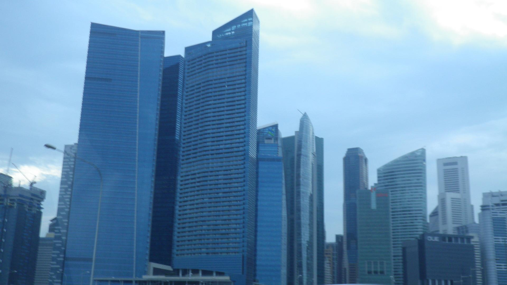
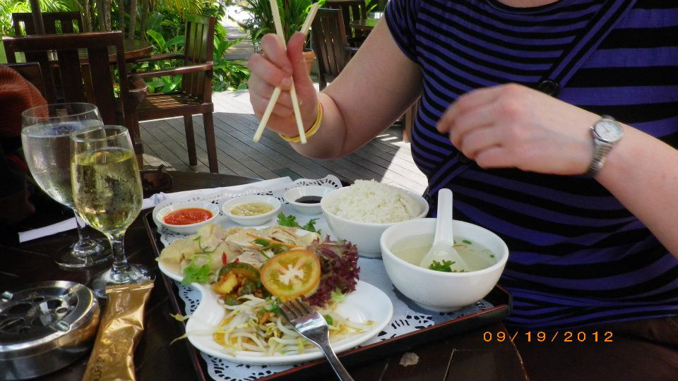
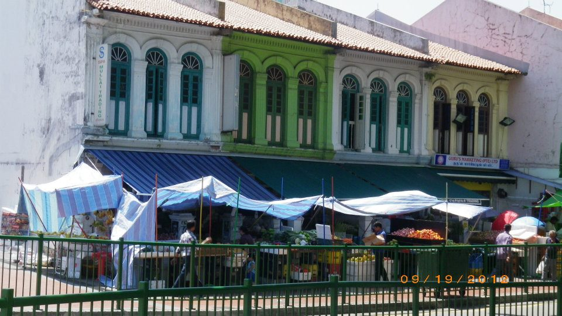
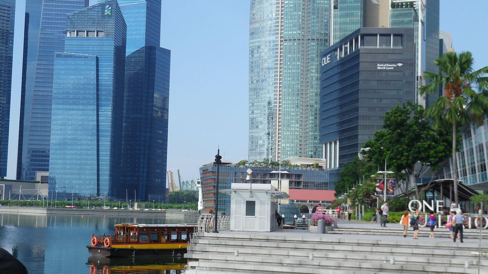

We stopped in Singapore en route to Australia and had just one night to play with. So naturally we hired a private tour guide, explored the city properly during the day, tried the local food, headed to the Singapore Zoo for the incredible night safari light show, and finished the evening with karaoke. As you do. 🎤 Singapore is one of those places that immediately makes you wish you'd booked more time.
The story
Singapore was a stopover on the way to Australia but we were absolutely not going to waste it. We hit the ground running — hiring a private guide for the day meant we covered the city properly without having to figure anything out ourselves. The Colonial District, Chinatown, Little India, the incredible skyline — Singapore has a density of things worth seeing that very few cities in the world can match.
The food was a revelation. Singapore's hawker centres are legendary for good reason — some of the best food we've ever had, at prices that make you double check the bill. Local dishes, unfamiliar flavours, and the kind of atmosphere that only happens when a whole city takes food this seriously.
Then came the highlight of the whole stopover — the Singapore Zoo night safari. Watching nocturnal animals in their natural setting after dark, with an extraordinary light show, is one of the most unique wildlife experiences we've ever had in 57 countries. It was genuinely spectacular and unlike anything else we've done.
And then karaoke. Because Singapore at night demands it. 🎤
One night. We'd go back for a week in a heartbeat.




What we got up to
Hiring a private guide for the day was the best decision we made. We covered far more of the city than we ever would have independently — and had someone to explain what we were seeing.
Singapore's food scene is extraordinary. The hawker centres alone are worth the stopover. Laksa, chicken rice, roti prata — we tried everything we could get our hands on.
One of the most unique wildlife experiences we've ever had. Nocturnal animals in their natural setting after dark, with an incredible light show. Genuinely spectacular.
Because Singapore at night demands it. No further explanation needed — or available. 😄
The Singapore skyline is genuinely jaw-dropping. Marina Bay Sands, the supertrees of Gardens by the Bay, the financial district — it is one of the most dramatic city views in the world.
Chinatown, Little India and the Colonial District each feel like completely different worlds — and they're all within a short distance of each other. The contrast is extraordinary.
Book the Singapore Zoo night safari
This was the standout experience of our whole Singapore stopover and one of the most unique things we've done anywhere. If you have even one evening in Singapore, the night safari at the zoo should be at the top of your list. Book it in advance — it fills up fast.
Disclosure: If you book through these links we may earn a small commission at no extra cost to you.
If you want to see Singapore properly — beyond just a stopover — TourRadar has some brilliant Singapore tour options worth looking at. Having everything organised means you can make the most of every hour in the city without spending your time planning.
Disclosure: This is an affiliate link. If you book through it we may earn a small commission at no extra cost to you.
What to pack for Singapore
Singapore is hot and humid year-round — temperatures sit around 30°C with high humidity. Pack light, breathable clothes and be prepared for the heat. These are the things we'd bring without hesitation.
Breathable and cool in the heat — and respectful when visiting temples and religious sites. Singapore is warm all year and linen is the most comfortable option.
View on Amazon →The Singapore sun is intense — especially if you're out exploring all day. High SPF is essential and you'll use more than you expect.
View on Amazon →Worth having especially for the zoo night safari when you're outdoors in the evening. Singapore's tropical climate means mosquitoes are around.
View on Amazon →Singapore is very walkable but you'll cover a lot of ground exploring the different neighbourhoods. Comfortable shoes are essential for a full day out.
View on Amazon →You will get through a lot of water in the heat and humidity. A reusable bottle saves money and keeps you hydrated all day.
View on Amazon →Singapore gets tropical downpours that arrive with no warning. A waterproof pouch protects your phone whether you're caught in the rain or just sweating in the heat!
View on Amazon →Full days out, maps, photos and the zoo at night will drain your battery fast. A power bank means you never miss a moment.
View on Amazon →Handy for maps, bookings and staying connected without relying on hotel Wi-Fi or paying roaming charges — especially useful for a short stopover.
View on Amazon →Singapore uses Type G plugs — same as the UK. Don't get caught out with nothing charged on a short stopover.
View on Amazon →Disclosure: These are Amazon affiliate links. If you buy through them we may earn a small commission at no extra cost to you. These are all things we'd genuinely pack for a Singapore trip.
Common questions
Even one night is enough to fall in love with Singapore. Start with the zoo night safari and a city tour — and leave time for the food. Lots of food.
Affiliate disclosure: if you book through our links we may earn a small commission at no cost to you. We only recommend experiences we've done ourselves.